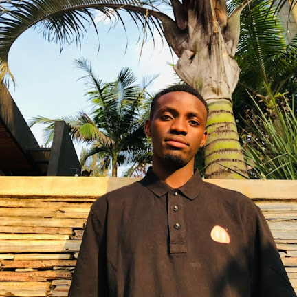

Vivance Niyiyavuze
Nationality: Rwanda
Age: 22
Student at ALU
Interested in Fullstack Web Development
Nationality: Rwanda
Age: 22
Student at ALU
Interested in Fullstack Web Development
Vivance Niyiyavuze is a dedicated software engineering student at ALU, with a strong passion for creating innovative and user-friendly web applications. He thrives on challenges and enjoys working on projects that require creative problem-solving and attention to detail. Vivance is not only a skilled developer but also a team player, who values collaboration and communication in achieving common goals.
Vivance is well-versed in building intelligent systems that can make data-driven decisions. He is enthusiastic about exploring the intersections of technology and human experience, striving to create applications that not only function flawlessly but also provide a seamless and enjoyable user experience.
Besides coding, Vivance enjoys staying up-to-date with the latest industry trends and emerging technologies. He believes that continuous learning and a growth mindset are essential in a field as dynamic as software engineering. In his free time, you can find him experimenting with new programming languages, attending tech meetups, or contributing to open-source projects.
Email: v.niyoyavuz@alustudent.com
Phone: +250 789 131 230